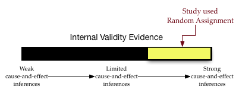

Evidencia de Validez Interna y Asignación Aleatoria
Las personas investigadoras en medicina pueden estar interesadas en demostrar que un fármaco ayuda a mejorar la salud de las personas (la causa de la mejora es el fármaco), mientras que las personas investigadoras en educacion pueden estar interesadas en demostrar que una innovación curricular mejora el aprendizaje del alumnado (la innovación curricular causa la mejora del aprendizaje). Para atribuir una relación causal, la persona investigadora debe establecer tres criterios:
- Precedencia temporal: La causa debe producirse ANTES que el efecto.
- Covariación de la causa y el efecto: Tiene que haber una relación correlacional entre la causa y el efecto.
- No hay explicaciones alternativas plausibles: Es necesario descartar TODAS las demás explicaciones posibles del efecto.
Debido a este tercer criterio, atribuir una relación causa-efecto es muy difícil. (Puede obtener más información sobre cada uno de estos criterios en el Web Center for Social Research Methods.
Los estudios experimentales tienen su punto fuerte en el cumplimiento de este tercer criterio. Para descartar TODAS las demás explicaciones posibles del efecto, el grupo de control y el grupo de tratamiento tienen que ser “idénticos” con respecto a todas las características posibles (aparte del tratamiento) que podrían explicar las diferencias. De este modo, la única característica que será diferente es que el grupo de tratamiento recibe el tratamiento y el grupo de control no. Si hay diferencias en el resultado, entonces debe ser atribuible al tratamiento, porque las otras posibles explicaciones quedan descartadas.
Por lo tanto, la clave está en hacer que los grupos de control y de tratamiento sean “idénticos” al formarlos. Algo que facilita (ligeramente) esta tarea es que no tienen que ser exactamente idénticos, sólo probabilísticamente equivalentes. Esto significa, por ejemplo, que si desea emparejar grupos en función de la edad, no es necesario que los dos grupos tengan distribuciones de edad idénticas; sólo tendrían que tener aproximadamente la misma edad MEDIA. Aquí aproximadamente significa “las edades medias deberían ser las mismas dentro de lo que esperamos debido al error de muestreo”.
Ahora sólo tenemos que crear los grupos de forma que tengan, de media, las mismas características &hellip para TODAS LAS CARACTERÍSTICAS POSIBLES que podrían explicar las diferencias en el resultado.
Resulta que crear grupos probabilísticamente equivalentes es un problema realmente difícil. Un método que funciona bastante bien es asignar aleatoriamente a las personas participantes a los grupos. Esto funciona mejor cuando se dispone de muestras de gran tamaño, pero incluso con muestras pequeñas la asignación aleatoria tiene la ventaja de al menos eliminar el sesgo sistemático entre los dos grupos (cualquier diferencia se debe al azar y probablemente se igualará entre los grupos). Como señala la página de Wikipedia sobre asignación aleatoria,
La asignación aleatoria de las personas participantes contribuye a garantizar que las diferencias entre los grupos y dentro de ellos no sean sistemáticas al inicio del experimento. Así, cualquier diferencia entre los grupos registrada al final del experimento puede atribuirse con mayor seguridad a los procedimientos experimentales o al tratamiento. &hellip La asignación aleatoria no garantiza que los grupos estén emparejados o sean equivalentes. Los grupos pueden diferir en algún atributo preexistente debido al azar. El uso de la asignación aleatoria no puede eliminar esta posibilidad, pero la reduce en gran medida.
La validez interna es el grado en que las inferencias de causa y efecto son precisas y significativas. La atribución causal es el objetivo de muchos investigadores. Por lo tanto, al utilizar la asignación aleatoria tenemos un grado bastante alto de evidencia de validez interna; tenemos una creencia mucho mayor en las inferencias causales. De forma muy parecida a las pruebas utilizadas en un tribunal de justicia, es útil pensar en las pruebas de validez en un continuo. Visualizaremos este continuo como un barómetro. Por ejemplo, un barómetro que visualice las pruebas de validez interna para un estudio que empleó la asignación aleatoria en el diseño podría ser:

El grado de evidencia de validez interna es alto (en el tercio superior). El grado depende de otros factores, como el tamaño de la muestra.
Para saber más sobre la asignación aleatoria, puede leer lo siguiente:
- El informe de investigación Random Assignment Evaluation Studies: A Guide for Out-of-School Time Program Practitioners